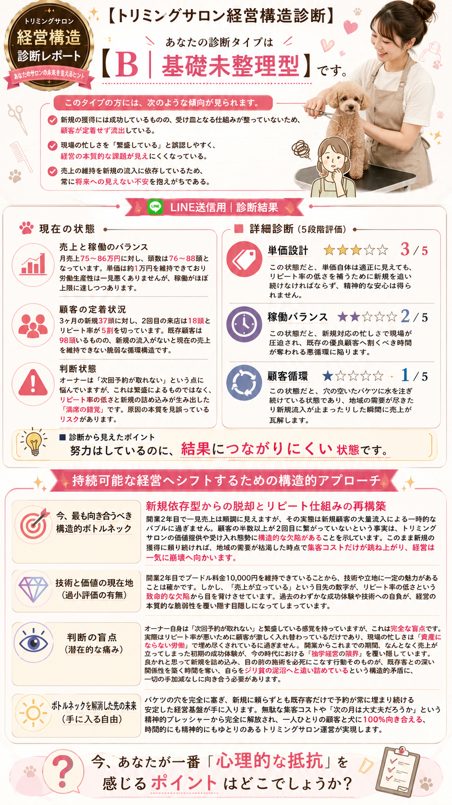

売上はあるのに、お金が残らない。
忙しいのに、楽にならない。
値上げが、怖い。
それは、あなたの努力が
足りないからではありません。
経営の「構造」が、
そうなっているからです。
登録後、約1分で診断フォームへ進めます
毎月、新しいお客様を増やそうとする。
SNSを更新し、広告を出し、予約枠を埋める。
頭数は増えていく。売上も、悪くない。
でも、手元に残るお金は変わらない。
休みは減って、体は疲れていく。
今のペースで、何年続けられるだろう。
それは、あなただけの問題ではありません。
業界の構造そのものが、そうなっているからです。
犬の数は、これから減っていきます。
その中で新規のお客様を増やし続けることは、
限られたパイを同業者と
奪い合うことに他なりません。
価格は下がり、忙しさは増し、
利益は薄くなる。
それが「集客頼みの経営」の
行き着く先です。
一頭のお客様と、どれだけ長く、
どれだけ深く、関係を築けるか。
それが、これからの時代の
経営の軸になります。
新規を増やさなくても、
売上は伸ばせます。
今いる30頭との関係性を深めることで、
市場そのものを、広げることができるのです。
「儲かるトリマー」を増やすこと
「稼ぎ続けられるトリマー」を
増やすこと
最初に、自宅サロンで実践したのは、
LTVを最大化する経営でした。
4度の値上げを行い、新規受付は停止。
顧客は、30頭。
自宅サロンでやってきたことを、
そのままテナントでも再現できる。
お客様にも、同じように伝わる。
そう思っていました。
新規のお客様は、ゼロではありませんでした。
でも、本来積み上がっていくはずの
売上が、いっこうに増えない。
気づけば、二度と来ないお客様を、
増やし続けているだけでした。
「来月になれば、大丈夫」
そう言い聞かせて、
自分を誤魔化していました。
夏が終わる頃、
税理士から電話がありました。
「お店、閉めましょうか。
それなら、家賃だけの赤字で済みます。」
──ホッとした。
家賃だけで済むのか。よかった。
もう、正常な判断ができる
状態ではありませんでした。
そこから、意地もプライドも
こだわりも、全て捨てました。
できることを、全てやった。
売上はV字、いや、
ほぼI字に近い回復をして、
今では、最初のモデルに
負けず劣らずの、
安定した高LTV経営を
実現しています。
今は2店舗目を運営しながら、
値上げ、来店周期の改善、LTVの向上を、
今も現場で検証し続けています。
完成形ではありません。
だからこそ、これからお伝えすることは、
理論ではなく、現場で起きていることです。
店舗見学会も開催し、
大阪や岡山など、遠方からの
参加者もいました。

これは、実際の診断レポートの一例です。
あなたのサロンの状態も、
こうして「見える化」されます。
※ 個別の事例であり、成果を保証するものではありません
トリミングサロン専門
無料経営診断
LINE登録で、受け取ることができます。
あなたのサロンが、今どんな構造で動いているのか。
売上は、どこから生まれているのか。
なぜ、利益が残らないのか。
今、最も改善すべき箇所はどこか。
何から、手をつければいいのか。
診断は、今のあなたの状態を
否定するものではありません。
「なぜ、今こうなっているのか」を、
一緒に見るためのものです。
無料診断の先には、
継続的に学べるオンラインサロンが
あります。
このオンラインサロンは、
人数を増やすことを目的にしていません。
一人ひとりの店舗で、
本当に成果が出るかどうかを、
大切にしています。
無理に勧誘するつもりはありません。
まずは、無料診断から。
あなたのサロンの状態を、
一緒に見てみませんか。
はい、無料です。LINE登録後、診断フォームにご回答いただくだけで、分析結果をお届けします。
はい。むしろ、個人サロン・小規模店舗の方を想定して設計しています。スタッフを抱えていない方も、ぜひご活用ください。
診断結果をお届けした後、ご希望の方にはオンラインサロンのご案内もしています。ただし、診断を受けただけで終わる方も、もちろん問題ありません。
LINE登録後、診断フォームへのご回答をいただいてから、順次お届けしています。
犬が減っていく時代に、
新規集客に頼らない経営は、可能です。
今いるお客様との関係性が、
これからのあなたの経営を支えます。
まずは、あなたのサロンの「今」を、
見える化することから。
登録後、約1分で診断フォームへ進めます